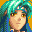
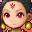
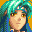
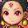

 As we know, Golden Sun 3 finally came to light.
 Whatever the future holds, it will be revealed here.
 It all started with the
release of the original duology.
It all started with the
release of the original duology.
 Been over two decades now,
hasn't it...
Been over two decades now,
hasn't it... And the
fans waited patiently for a third Golden Sun.
And the
fans waited patiently for a third Golden Sun.
 Seven years they waited...
Seven years they waited...
 This section essentially
chronicles that long wait...
This section essentially
chronicles that long wait...
 As we know, Golden Sun 3
finally came to light. Otherwise known as Golden Sun: Dark Dawn.
Otherwise known as Golden Sun: Dark Dawn.
 And now an even longer time
has passed since then...
And now an even longer time
has passed since then...
 We're still waiting,
aren't we?
We're still waiting,
aren't we? It really
has been a long wait, and with that cliffhanger too...
It really
has been a long wait, and with that cliffhanger too...
 Sure hope our dads are
doing okay.
Sure hope our dads are
doing okay. One thing's
for sure though, should that sequel ever be announced...
One thing's
for sure though, should that sequel ever be announced...
 Or, well, anything in the
series or relating to it...
Or, well, anything in the
series or relating to it...
 Whatever the future holds,
it will be revealed here.
 In the meantime, we've
got it all chronicled right here.
In the meantime, we've
got it all chronicled right here.
 And we're always hoping to
be able to add something new.
And we're always hoping to
be able to add something new.
Golden Sun in Super Smash Bros. Brawl
Golden Sun in Super Smash Bros. Ultimate